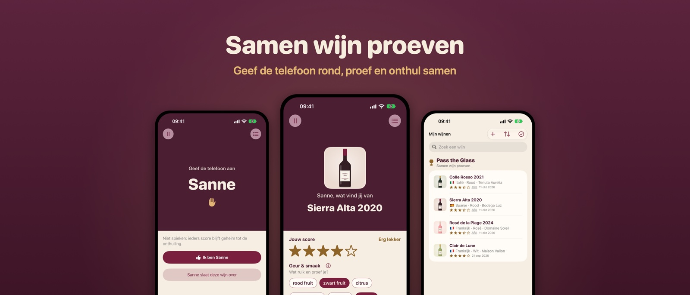
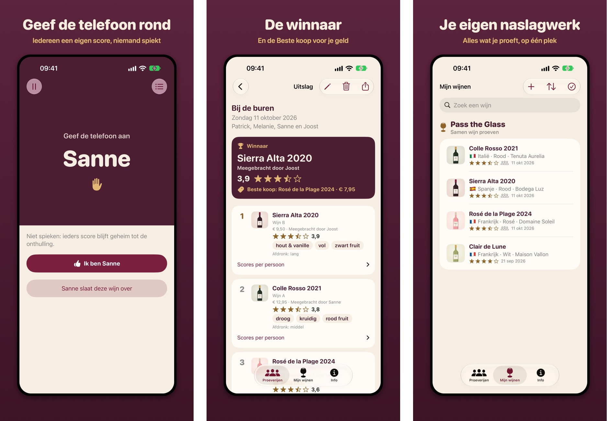
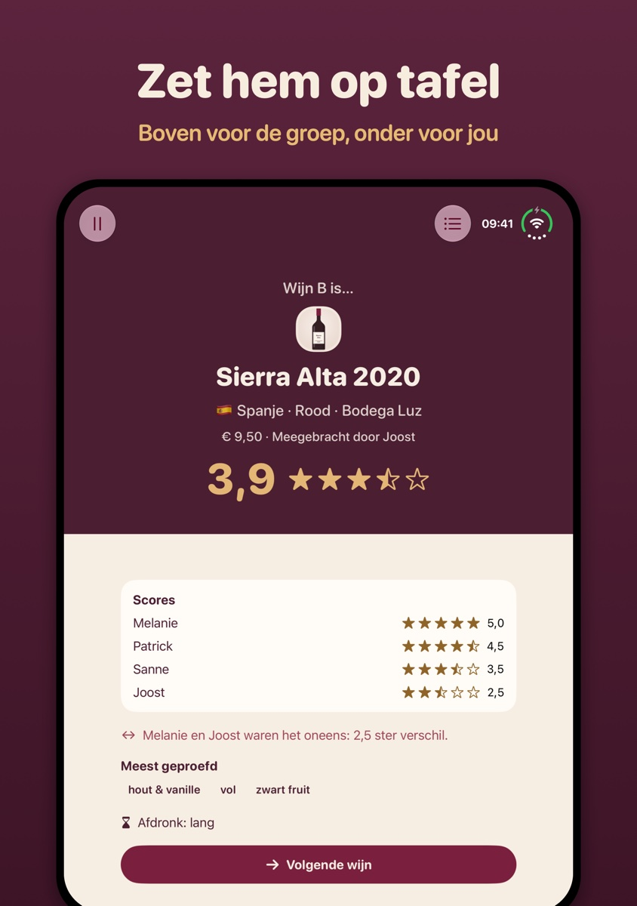

Pass the Glass
English
Pass the Glass
English
Samen wijn proeven
Pass the Glass is onze app om samen met vrienden wijn te proeven. Eén telefoon gaat rond de tafel, iedereen geeft een eigen score, en aan het eind onthul je samen de winnaar. Geen proefformulieren, geen pennen.

Zo werkt het
- Voorbereiden. Voeg de proevers en de wijnen toe, of kies je vaste groep. Blind proeven kan ook.
- Proeven. Schenk in, kijk, ruik en proef.
- Doorgeven. De telefoon gaat rond. Niemand ziet elkaars score.
- Onthullen. Per wijn klinkt een tromgeroffel terwijl de score oploopt. Daarna zie je wat iedereen vond, en wie het oneens was. Aan het eind volgt de winnaar, met confetti.
Beste koop
Vul ook de jaargang, de prijs en wie de fles meebracht in. Prijs en meebrenger blijven geheim tot de onthulling. Met prijzen erbij wijst de uitslag de Beste koop aan: de meeste sterren voor je geld.
Geen wijnkennis nodig
Je geeft sterren en tikt aan wat je proeft: rood fruit, kruidig, droog of zoet. Hoe lang blijft de smaak hangen? Weet je niet wat een woord betekent? Tik op ⓘ voor uitleg. Zo leer je vanzelf beter proeven.
Mijn wijnen: je eigen naslagwerk
Alles wat je proeft, op één plek. Na elke proeverij komen de wijnen vanzelf in Mijn wijnen, met de score van de groep. En iets lekkers gedronken in een restaurant? Maak een foto van het etiket en geef sterren. Dan weet je later nog welke het was.

Gemaakt voor de iPhone Duo
Zet de Duo half open op tafel. Boven ziet de groep de onthulling, onder geeft de persoon met de telefoon de score. Ook opengeklapt, als boek of dichtgeklapt past alles bij de stand. De app werkt ook op elke andere iPhone met iOS 27.

Waarom een app?
Het idee komt uit onze Borrelclub-Box. Bij het proeven raakten de papieren formulieren altijd kwijt, en een telefoon die rondgaat is leuker.
Privacy
Alles blijft op je eigen telefoon. Geen account, geen reclame, geen tracking. Lees het privacybeleid.
Voor wijnhandels
Verkoop je wijnboxen? Met een QR-code op het kaartje staan de wijnen meteen klaar in de app. Wij regelen de techniek: zo werkt het.
Downloaden
Gratis in de App Store, in het Nederlands en Engels.
Pass the Glass in de App Store
18+, drink met mate.